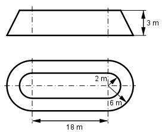

Aufgabe 283 Wie viel m3 Erdreich müssen für den Wall aufgeschüttet werden?

Der Wall besteht aus einem Kegelstumpf K und einem Trapezprisma T л * h K = -------- * (r12 + r1 * r2 + r22) 3 л * 3 K = ------- * (22 + 2 * 6 + 62) m3 3 K = л * (4 + 2 * 6 + 36) m3 K = 163,3 m3 4 m + 12 m T = -------------- * 3 m * 18 m = 432 m3 2 V = 163,3 m3 + 432 m3 = 595,3 m3